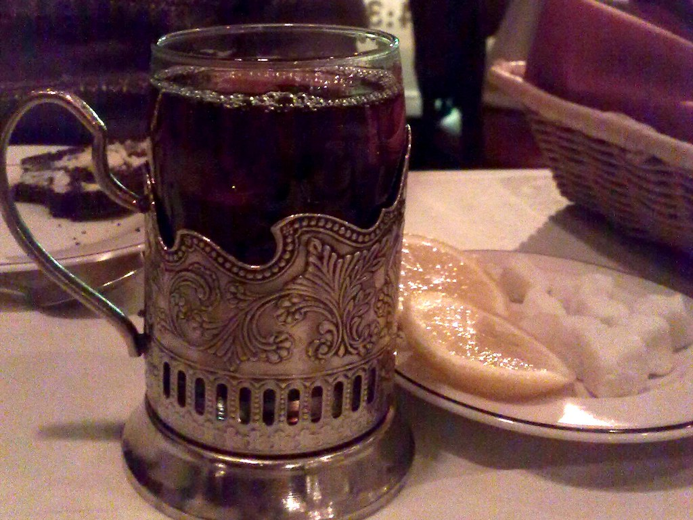

Russian Tea

Description
Russian tea generally refers to two very different things depending on whether you are in Russia or the United States.
In Russia, it refers to a strong, brewed-from-concentrate black tea traditionally prepared in a samovar, while in the U.S. (specifically the South), it is a popular, sweet, and spiced instant powder mix, often served during the holidays.
It's a tangy beverage on a cold winter's morning when I want something tasty and hot, but don't want coffee! It makes a great gift from your kitchen, too!
Ingredients
- 2 cups white sugar
- 2 cups orange-flavored drink mix (such as Tang)
- 1 cup instant tea powder
- 1 (3 ounce) package powdered lemonade mix
- 2 teaspoons ground cinnamon
- ½ teaspoon ground cloves
Steps
- Gather the ingredients.
- Combine sugar, orange drink mix, tea powder, lemonade powder, ground cinnamon, and ground cloves in a large bowl; mix thoroughly.
- Store in a sealed jar.
- To Make:
Stir 3 to 4 tablespoons of dry mix into 1 cup of hot or cold water.
Credit: Submitted by Paula